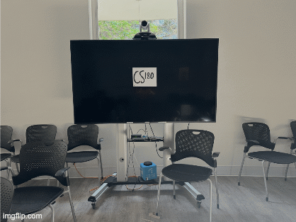

Project 0: Becoming friends with my camera
The goal of this project is to get some intuitive understanding of the somewhat subtle relationship between perspective, focal length/zoom, and the center of projection.
Part 1: Taking a selfie the right vs. wrong way


This is my housemate Sophia!
Part 2: Architectural perspective compression


📍 On Optometry Lane.
Part 3: Dolly Zoom
